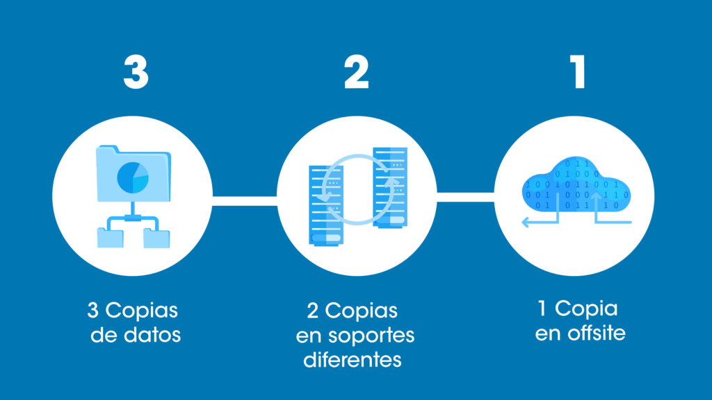

Descripción del problema
Se ha detectado una vulnerabilidad crítica de desbordamiento de búfer en el subsistema de red del kernel Linux. Esta falla permite a un atacante remoto no autenticado ejecutar código arbitrario con privilegios de superusuario (root) en sistemas no parcheados.
Solución aplicada y recomendaciones
Los administradores de sistemas deben aplicar el parche de actualización inmediata mediante los gestores de paquetes oficiales o recompilar el kernel a la versión estable más reciente.
Motivación de la arquitectura
Debido al rápido crecimiento del tráfico, la arquitectura monolítica anterior resultaba difícil de escalar. Se decidió migrar la infraestructura hacia microservicios en contenedor utilizando Docker y orquestados mediante Amazon EKS (Kubernetes).
Resultados y beneficios obtenidos
El despliegue en la nube ha permitido reducir los tiempos de inactividad a cero gracias a los rolling updates. Además, la capacidad de autoescalado horizontal optimizó los costes operativos en un 35% durante las horas de menor demanda.
Fundamentos de la regla 3-2-1
Para mitigar riesgos de ransomware o fallos de hardware, es vital implementar la regla 3-2-1: Mantener al menos 3 copias de tus datos, almacenadas en 2 medios o soportes diferentes, con 1 de ellas fuera de las instalaciones (off-site o en la nube).
Automatización y recuperación
Configurar copias de seguridad automatizadas y programar simulacros periódicos de restauración garantiza que los datos no solo estén respaldados, sino que sean verdaderamente recuperables ante cualquier incidente crítico.
